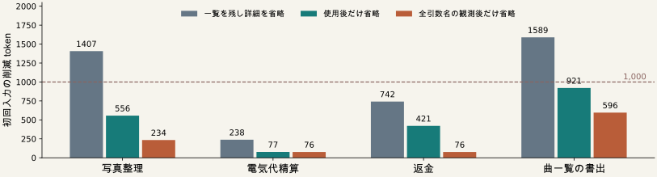

必要な処理を残すハーネス制御
10月23日の判断に向けた進捗
10月22日 夜の判断資料 / 01
最終品質を守り、仕事全体の費用を減らす
不要な情報取得・共有・AI呼出し・実行・検証を、ハーネスで減らす。
評価する費用
全AI入力＋出力 token
制御・再取得・失敗を含む
10月23日：主張・主要結果・あらまし ／ 10月31日：レター投稿完了
局所比較を最終目標へつなぐ。単一作業役の結果から、多担当の削減効果は主張しない。
API件数・時間・推論器の稼働も併記する。現在の局所比較だけで独自方式や品質維持は確定していない。
10月22日 夜の判断資料 / 02
選択表示は写真の成功を失い、採用を見送った
| P47・４既知課題 | 全表示 | 選択＋名前返信 | 選択＋契約返信 |
|---|
| 写真整理 | 成功 | 未達 | 未達 |
| 電気代精算 | 未達 | 未達 | 未達 |
| 返金 | 成功 | 成功 | 成功 |
| 曲一覧の書出 | 未評価 | 未実行 | 未実行 |
９評価・１未評価・２未実行。既知834,705 token＋使用量不明１呼出し。
P49／P50の局所修復候補も限定的で、通常の決定的な対応付けを先に対照へ置く。
未評価・未実行を埋めず、返金の費用増も含めて、全12予定条件を保存した。
同じ４課題・各１回の開発比較。選択条件には省略したAPI名／契約の拒否時返信がある。写真の選択＋契約には対象拒否がなく返信０。返金は全表示32,145、名前63,118、契約47,185 token。４課題の完全比較は成立していない。
10月22日 夜の判断資料 / 03
途中の観測値と、確定した使用量を分けた
| P51・合成３生成 | 入力＋出力 token | 記録の扱い |
|---|
| 通常応答 | 201 ＋ 76 | 確定した使用量を保存 |
| ストリーム完了 | 201 ＋ 76 | 確定した使用量を保存 |
| 意図した切断 | 不明 | 出力４以上／途中メッセージ不使用 |
既知554 token＋不明１呼出し。52監査の不一致０。
推論器の稼働 96.438秒。初期版の生成前失敗も別に保存（稼働41.110秒）。
計測校正は終了。過去の欠測を推定で埋めず、タスク性能の結果とは区別する。
意図した切断は出力４ tokenを観測した時点で終了。正確な最終使用量は不明。実際の自然タイムアウトや停電耐性は測っていない。確定した２応答のメッセージは一致したが、一般的再現性の保証ではない。
10月22日 夜の判断資料 / 04
使用済みの説明だけを省く２候補は、配分基準未達
P52の候補をP53で実計数：４境界 × ４入力、生成０。基準は「２課題で1,000 token以上」。

全４課題の削減合計：単純対照3,976 ／ 使用後1,975 ／ 全引数名観測後982 token
２候補の継続生成は見送る。単純対照の基準達成も、品質・総費用・新規性の証明ではない。
入力一覧、未使用の契約、最新ターン等を保持する使用履歴候補。過去使用は将来不要の証明ではない。計数全体0.603秒、推論器稼働151.507秒。計数後の待機も隠さず記録。86監査は入力再構築と保存計数の整合確認で、再計数ではない。
10月22日 夜の判断資料 / 05
金曜は、具体的な規則と主張を一つに絞る
| 残る判断 | 次にそろえる根拠 |
|---|
| 減らせる不要処理 | 取得・呼出しそのものを省ける公開の条件 |
| 必要処理の保持 | 適用外・有害条件と、通常方式へ戻る条件 |
| 追加価値 | 強い単純対照との、最終品質・総費用の比較 |
| 投稿物 | 検討用４ページは作成済み。中心主張・公式様式・著者情報は未完了 |
未閲覧12シナリオは方式選びに使わない。Project #70・#71・#72と資料を同期する。
10月23日：主張・結果・あらまし → 25日：追加確認 → 29〜30日：原稿 → 31日：投稿
独自の中核と品質を保った総費用削減は未確立。次の案は公開契約と強い対照を確認してから有限計画にする。計測・実装件数を主張の代わりにはしない。検討用４ページは一般jsarticleであり、公式様式の４ページ確認ではない。